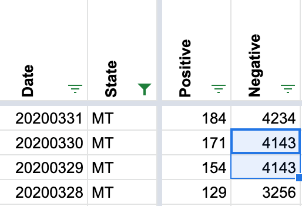

MT: Negatives reports are lower on Mar 29 than on Mar 30
MT reports a lower total on March 30 than March 29 (3961 v 4143), even though they also provide a good number of tests. Since negative = total - positive, that results in a negative number of negatives, then the totalTestResultsIncrease goes negative as well.
(TBH the MT numbers on their website are confusing to me. The screen shots show totals that don’t jibe with the “new tests completed” figures right above them. Maybe they’re just updating the new tests every time they refresh the page?)
Hi @Jmuccigr, Thank you for pointing this out. It is common for states’ reports on their total tests to lag updates on their positive tests, making it appear as if negative numbers are decreasing (since negatives are inferred through totals - positives). This lag is, I think, what you are noticing about MT’s “Total Number of Tests Completed” figure sometimes appearing mismatched to their “Total Cases.”
We operate on a policy of never decreasing the number of negatives day over day. Thus, in this case, we carried over the negative figure from 3/29, 4143, to 3/30 until total test updates caught up with positives on 3/31. 
This issue has been automatically marked as stale because it has not had recent activity. It will be closed if no further activity occurs. Thank you for your contributions!